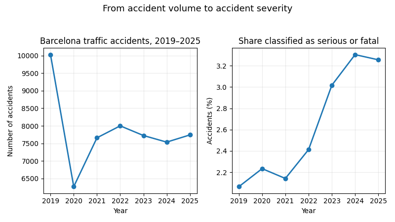

Barcelona traffic accidents, 2019-2025

Visualization story: accident volume changed sharply over the period, especially in 2020, while the share of records classified as serious or fatal increased in the later years. The two measures are shown together to avoid interpreting road-safety conditions from accident volume alone.
Dataset: Barcelona traffic accidents, 2019-2025. The dataset contains 54,954 records and 29 fields covering time, location, accident characteristics, victims and severity.
The first important pattern is temporal. Accident volume falls from 10,027 records in 2019 to 6,268 in 2020, then recovers and remains between roughly 7,500 and 8,000 accidents per year from 2021 onward. Monthly activity is not uniform: July is the highest month (5,187 records), while August is the lowest (3,589). Accidents also show a strong daily cycle, peaking in the afternoon and evening and reaching their lowest levels during the early morning.
The second story concerns severity. Most records are classified as Leve, while Grave and Mortal accidents are a small minority. However, their share increases from 2.1% in 2019 to 3.3% in 2024 and 3.3% in 2025. Therefore, accident frequency alone does not fully describe road-safety risk.
Geographically, Eixample has the largest number of recorded accidents (15,080), but this is a count rather than a population- or traffic-exposure-adjusted rate. Missingness is low overall: 232 records lack district/neighbourhood information, 42 lack coordinates and one lacks a street name. There are 26 repeated expedition identifiers, but they differ only in pedestrian-cause category, so they should not automatically be treated as duplicate accidents.